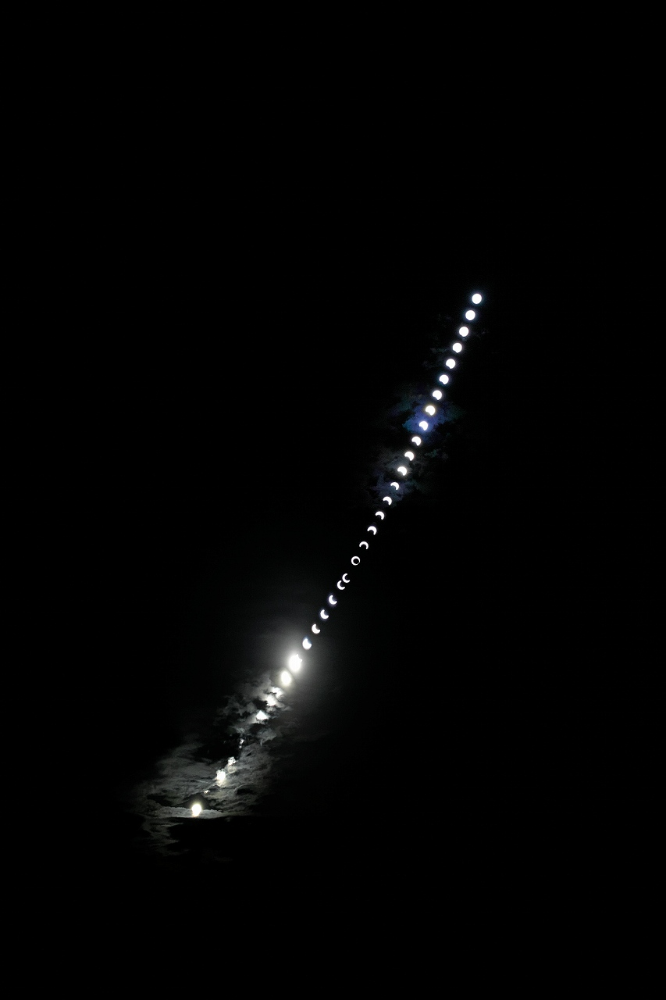
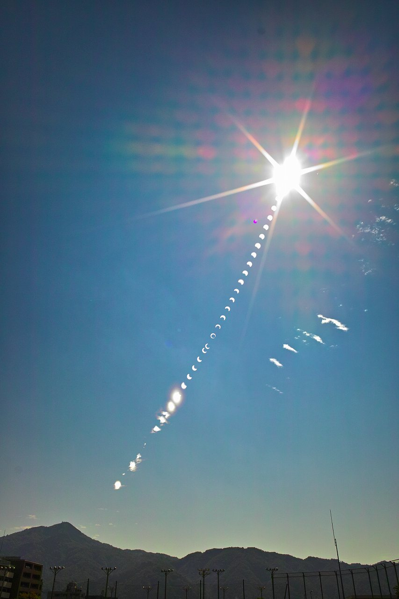
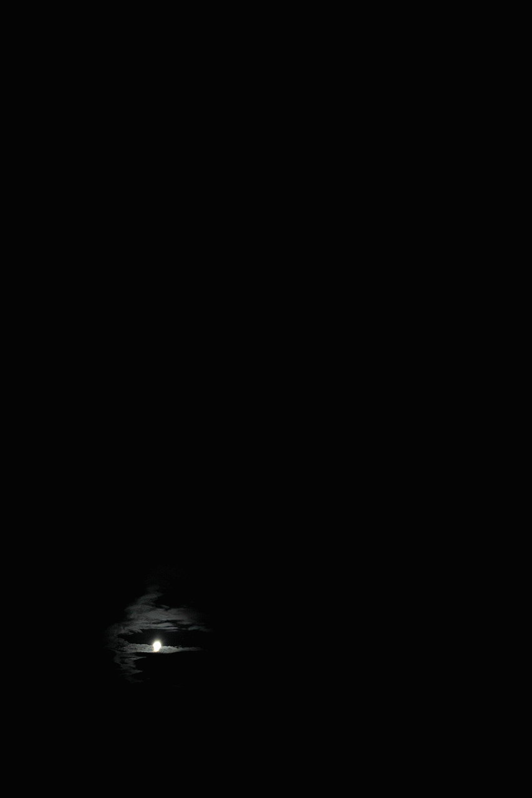

朝6時から9時まで観測した助教曰く、納得いくものが撮れたとのことです。左下から右上に向かって太陽が移動しています。最初の方は雲間からですが、食の最大の7時30分40秒はバッチリ撮れています。
フィルタ越しでこんな感じです（下にgif動画あります）
ノイズ多いですが、比叡山との位置関係が良く分ります（下にgif動画あります）
この前のH2Aロケット打ち上げみたいで気に入ってます

こそっと19MBあります
| ・金環日食 (H24.05.21) | ||
朝6時から9時まで観測した助教曰く、納得いくものが撮れたとのことです。左下から右上に向かって太陽が移動しています。最初の方は雲間からですが、食の最大の7時30分40秒はバッチリ撮れています。 |
||
|

フィルタ越しでこんな感じです（下にgif動画あります） |
||
|

ノイズ多いですが、比叡山との位置関係が良く分ります（下にgif動画あります） |
||
|

この前のH2Aロケット打ち上げみたいで気に入ってます |
||
|
こそっと19MBあります |
||